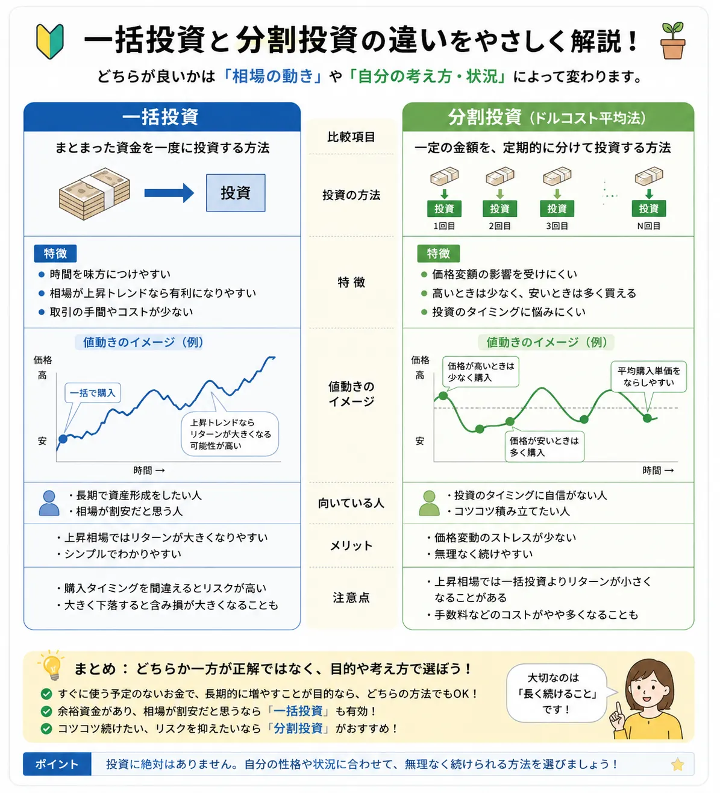

Investment Method
一括投資と分割投資の違いとは？
投資を始めるとき、まとまった資金を一度に使うべきか、何回かに分けて使うべきかで迷う人は多いです。一括投資と分割投資にはそれぞれ特徴があり、どちらか一方が必ず正解とは限りません。この記事では、資金の使い方・リスク管理・相場変動への向き合い方を初心者向けに整理します。
Introduction
投資資金は一度に使うべき？分けて使うべき？
投資初心者が最初に悩みやすいのが、投資資金をどのタイミングで使うかです。たとえば、手元にまとまった余裕資金があるとき、一度に投資すればよいのか、毎月少しずつ投資すればよいのか判断に迷うことがあります。

一括投資
まとまった資金を一度に投資する
上昇相場では早く資金を市場に置ける一方、買った直後に下がると心理的な負担が大きくなります。
分割投資
資金を複数回に分けて投資する
購入タイミングを分散できるため、高値掴みのリスクをならしやすい反面、相場が上がり続けると機会損失になることもあります。
基本姿勢
自分に合う続け方を考える
どちらが絶対に正しいかではなく、自分の資金状況、不安の大きさ、投資期間に合わせて考えることが大切です。
投資資金の使い方は、資金管理とは？初心者向けに解説の考え方とも深く関係します。生活費や緊急資金まで投資に回すのではなく、余裕資金の範囲で無理なく考えることが基本です。
Lump Sum
一括投資とは？
一括投資とは、まとまった資金を一度に投資する方法です。たとえば、投資資金として用意した30万円を、同じタイミングで投資信託や株式などにまとめて投資するイメージです。
- まとまった資金を一度に投資する方法
- 上昇相場では利益を得やすい場合がある
- 購入タイミングの影響を受けやすい
- 買った直後に下がると心理的な負担が大きくなりやすい
一括投資は「市場に早く参加する」考え方
一括投資の特徴は、資金を早い段階で市場に置けることです。投資した後に相場が上がれば、資金全体が上昇の恩恵を受けやすくなります。ただし、投資した直後に下落した場合は、まとまった含み損を抱えることになりやすく、初心者にとっては不安を感じやすい方法でもあります。
Split Investment
分割投資とは？
分割投資とは、投資資金を複数回に分けて投資する方法です。たとえば、30万円を一度に使うのではなく、毎月5万円ずつ6回に分けて投資するような形です。
購入タイミングを分散できる
一度の価格でまとめて買うのではなく、複数の価格で買うため、タイミングの偏りを抑えやすくなります。
価格変動の影響をならしやすい
高いときも安いときも買うことで、購入単価をならす考え方につながります。
分割投資は、積立投資とは？やドルコスト平均法とは？とも関係があります。特に、毎月一定額を投資する形は、ドルコスト平均法の考え方として説明されることがあります。
Compare
一括投資と分割投資の違い
一括投資と分割投資は、資金の使い方・リスクの感じ方・購入タイミングの影響が異なります。スマホでは横にスクロールして確認できます。
| 比較項目 | 一括投資 | 分割投資 | 初心者の見方 |
|---|---|---|---|
| 資金の使い方 | まとまった資金を一度に投資する | 資金を複数回に分けて投資する | 余力を残すかどうかも考える |
| リスクの感じ方 | 下落時の心理的負担が大きくなりやすい | 少しずつ慣れやすく、不安を抑えやすい | 自分が冷静でいられる方法を選ぶ |
| 購入タイミング | 買った時点の価格に影響されやすい | 購入時期を分散できる | タイミングに自信がない人は分散も検討 |
| 上昇相場 | 早く投資した分、有利になる場合がある | 資金が残っている分、機会損失になる場合がある | 短期の値動きだけで決めない |
| 初心者が意識したい点 | 買った後の下落に耐えられるか | 計画通りに続けられるか | 投資前にルールを決める |
※ 横にスクロールできます
資金の使い方
一括投資は資金を早く市場に置きます。分割投資は資金を残しながら、段階的に投資します。
リスクの感じ方
一括投資は値下がり時の損失額が大きく見えやすく、分割投資は心理的負担を抑えやすい傾向があります。
購入タイミングの影響
一括投資は購入時点の価格が重要になり、分割投資はタイミングをならしやすくなります。
Pros and Cons
一括投資のメリット・デメリット
一括投資は、資金を早く市場に置ける点が特徴です。一方で、タイミング次第では含み損を抱えやすく、下落時の不安も大きくなりやすいです。
メリット
上昇相場では有利になる場合がある
投資後に相場が上がれば、資金全体が上昇の恩恵を受けやすくなります。長期的に市場が成長すると考える人にとっては、早く市場に参加できる点が魅力です。
デメリット
下落時の心理的負担が大きい
投資した直後に大きく下がると、まとまった含み損が出やすくなります。不安からすぐ売ってしまうと、計画が崩れる原因になります。
買うタイミングを意識したい場合は、エントリータイミングの考え方とは？もあわせて確認しておくと、焦って買う行動を避けやすくなります。
Pros and Cons
分割投資のメリット・デメリット
分割投資は、価格変動に対する心理的負担を抑えやすい方法です。ただし、計画を決めずに分けるだけでは、判断があいまいになりやすい点に注意が必要です。
高値掴みのリスクを分散しやすい
一度の価格で全額を投資しないため、買った直後に下がった場合でも、次の投資で安く買える可能性があります。
急上昇相場では機会損失になる場合がある
相場が上がり続ける場合、まだ投資していない資金は上昇の恩恵を受けられません。そのため、一括投資より結果が劣る場面もあります。
- 分割回数、投資金額、投資日を事前に決めておく
- 相場が下がったからといって、感情だけで予定を変えない
- 生活費や緊急資金まで投資しない
For Beginners
初心者はどちらを選ぶべきか？
初心者にとって大切なのは、理論上の有利不利だけでなく、自分が冷静に続けられるかです。投資目的、資金量、リスク許容度によって向き不向きは変わります。
-
投資目的を確認する
老後資金、教育資金、短期の資金作りなど、目的によって投資期間やリスクの取り方は変わります。
-
資金量と余力を確認する
まとまった資金があっても、すべてを投資に回す必要はありません。生活防衛資金を残したうえで考えることが大切です。
-
リスク許容度を確認する
数％下がっただけで不安が強くなる人は、分割投資で少しずつ慣れる方法を検討しやすいです。
-
事前ルールを決める
いつ、いくら、どの商品に投資するのかを決めておくと、感情的な判断を減らしやすくなります。
迷う場合は、投資ルールを決める重要性とは？を参考に、買う前のルール作りから始めると整理しやすいです。
Mistakes
初心者がやりがちな失敗
一括投資でも分割投資でも、失敗の多くは方法そのものより、計画なしに感情で動いてしまうことから起こりやすいです。
焦って一括投資する
「今買わないと乗り遅れる」と感じて全額を投資すると、買った後に下がったときに冷静さを失いやすくなります。
下がった後に怖くなって売る
投資前に想定していない下落が起きると、損失を確定させるか迷いやすくなります。損失時の心理については、損失が出ると冷静な判断ができなくなる理由も参考になります。
計画なく分割する
分割投資は、ただ何となく分ければよいわけではありません。投資日や金額を決めていないと、結局いつ買うか迷い続けることになります。
余力を残さない
一括投資でも分割投資でも、生活費や緊急資金まで使うのは危険です。相場が下がったときに、冷静に待つ余裕がなくなります。
Summary
まとめ｜一括投資と分割投資は自分に合う方法で考える
一括投資と分割投資には、それぞれ特徴があります。一括投資は資金を早く市場に置ける一方で、購入タイミングの影響を受けやすく、下落時の心理的負担が大きくなりやすい方法です。分割投資は価格変動をならしやすい一方で、相場が上がり続ける場合は機会損失になることがあります。
- 一括投資と分割投資には、それぞれメリット・デメリットがある
- 一括投資は購入タイミングの影響を受けやすい
- 分割投資は価格変動をならしやすい
- 自分の資金状況とリスク許容度に合わせて考えることが大切
FAQ
よくある質問
Q. 一括投資とは何ですか？
一括投資とは、まとまった資金を一度に投資する方法です。投資後に相場が上がれば資金全体が上昇の恩恵を受けやすい一方、買った直後に下がると心理的な負担が大きくなりやすいです。
Q. 分割投資とは何ですか？
分割投資とは、資金を複数回に分けて投資する方法です。購入タイミングを分散できるため、高値掴みのリスクをならしやすい特徴があります。
Q. 初心者は一括投資と分割投資どちらが向いていますか？
投資目的、資金量、リスク許容度によって変わります。不安が大きい人は分割投資で少しずつ慣れる方法を検討しやすいですが、長期で市場に資金を置く考え方を重視するなら一括投資を選ぶ人もいます。
Q. 分割投資とドルコスト平均法は同じですか？
完全に同じではありません。分割投資は資金を複数回に分けて投資する広い考え方です。ドルコスト平均法は、定期的に一定額を投資して購入単価をならす考え方で、分割投資の一種として説明されることがあります。
Next Learning
次に読むなら、積立投資とドルコスト平均法も確認
分割投資の考え方をさらに深めたい場合は、積立投資やドルコスト平均法をあわせて読むと理解しやすくなります。
ご利用にあたっての注意事項
本記事は情報提供を目的としており、投資の勧誘を目的としたものではありません。株式・投資信託・外国証券等の取引は元本保証がなく、相場変動等により損失が生じる場合があります。取引開始前に、契約締結前交付書面や商品説明書、目論見書等を必ずご確認のうえ、ご自身の判断と責任でお取引ください。